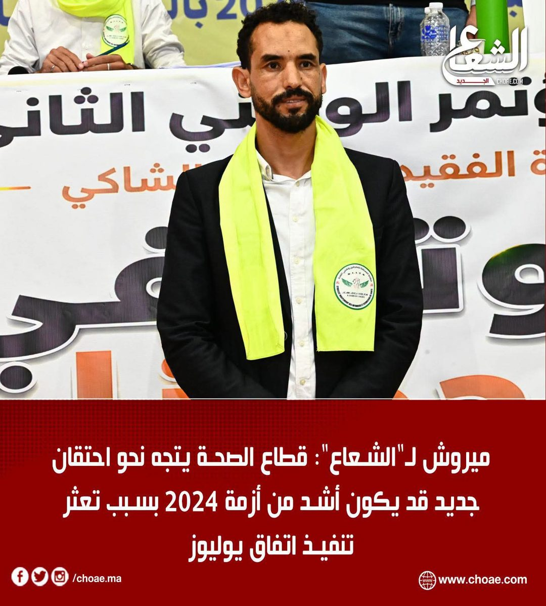

ميروش لـ«الشعاع»: قطاع الصحة يتجه نحو احتقان جديد قد يكون أشد من أزمة 2024 بسبب تعثر تنفيذ اتفاق يوليوز

حذّر عبد الله ميروش، الكاتب الوطني للنقابة المستقلة للممرضين وتقنيي الصحة، في تصريح لجريدة «الشعاع»، من أن قطاع الصحة يتجه نحو مرحلة احتقان جديدة قد تكون أشد حدة من أزمة 2024، بسبب تراجع الوزارة والحكومة عن التزامات أساسية تضمنها اتفاق يوليوز 2024.
وأوضح ميروش أن الاتفاق نص على الحفاظ على المكتسبات السابقة للشغيلة الصحية وإقرار تحفيزات جديدة تكرس الخصوصية المهنية للقطاع، غير أن تنزيله اتجه نحو تفعيل البنود والمراسيم التي تخدم الإدارة، مع إغفال مقتضيات التحفيز وتحسين الأوضاع المهنية والاجتماعية، واستمرار المماطلة في تنفيذها.
وانتقد الكاتب الوطني دفع عشرات الآلاف من موظفي الصحة نحو المجموعات الصحية الترابية، معتبراً أن التجربة تعرف اختلالات متعددة يطبعها منطق التسلط والتدبير الأحادي، وتجاوز المقاربة التشاركية وتهميش الأدوار النقابية، فضلاً عن ممارسات تهديد وتنكيل وشطط في حق الموظفين.
وأشار إلى أن الانتقال إلى وضعية مستخدمين رافقه تغيير في تصنيف أجور الموظفين، التي انتقلت من خانة نفقات الموظفين إلى خانة المعدات.
وحذر ميروش من أن استمرار هذا الوضع سيعمق الاحتقان داخل القطاع ويرفع منسوب التوتر خلال الأيام المقبلة، ما لم تستجب الحكومة والوزارة الوصية لمطالب الشغيلة الصحية وتنفذ التزامات اتفاق يوليوز 2024.
فتح في تطبيق النقابة